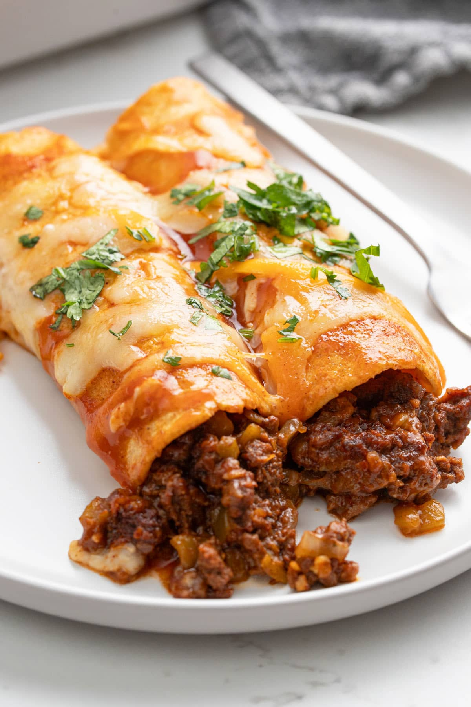

Home
Enchiladas

This easy ground beef enchiladas recipe takes simple ingredients and transforms them into delicious enchiladas smothered in sauce and cheese. It's great for family weeknight dinners served with your favorite toppings.
PS: This recipe uses beef as protein source but you can substitute with any protein of your choice such as: chicken, mutton, pulled pork, tuna, tofu, soy curls, baked beans etc
Ingredients:
- Tortiallas (Freshly made or store bought is fine)
- Chopped onions
- Ground beef
- Minced Garlic
- Green Chiles
- Tomato paste
- Taco seasoning
- Mexican cheese blend (or any cheese)
- Enchilada sauce
Steps:
- Brown the ground beef and saute onions and garlic.
- Add taco seasoning and simmer.
- Layer enchilada sauce in baking dish.
- Add beef mixture to tortillas.
- Top the beef mixture with cheese and roll tightly.
- Arrange the tortillas seam side down inside the baking dish.
- Top with enchilada sauce and cheese.
- Bake uncovered until cheese melts.
Source: The cooking jar